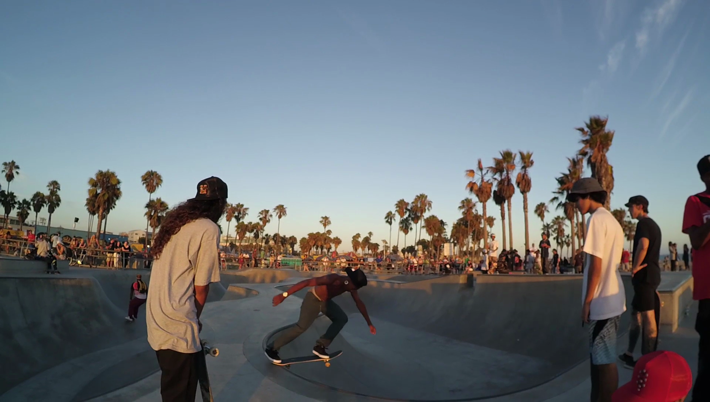

Stereo Camera Tests
My First attempts were side by side camera arrangements. Set up like this
Shown with my first multi channel microphone arrangement
This worked really well for being so simple. It’s basically two gopro type cameras butted together. There is a small aluminum angle bar glued up keeping them rigidly aligned. The distance between the lenses is about the same as the distance between my eyes. This setup was what started this obsession, because making compelling imagery was easy enough to drive me deeper into the madness and eventually buy 9 cameras total.
At the time of this photo I was using Touch Designer to mock up different viewers. These started as uv mapped spheres and spherical meshes of the required aspect, one for each eye, each getting 1080p video. I set up some midi controls to dial in some parameters (things like interocular, rough glsl dewarp, vertical alignment, overall scale) until it was comfortable for me. I shot various things, exploring. I picked a few of these tests and cut them together into a demo piece and got encouraging feedback when I showed it.
Unfortunately TD is not a deployable platform like UE4, so it was not really sharable online. To overcome this. I spent a bit of time working out how to generate a latlong that I could maybe eventually put up on milkVR or youtube. This required some spherical transformation in glsl, and once I started down that road I wanted to fade up the edges and whatnot, so I lingered here tinkering for a while on all of that. The kind of math required for spherical transformations of image coordinates is not something that comes easily to me, so this really took a while to get working. Eventually I wrote out a SBS movie which included a few different clips, viewable on the gear VR. This all worked almost as well as my stand alone touchdesigner viewer, but for an issue at the edges where it was pinched a bit too much. This shortcoming frustrated me because of all the time I had spent getting this far, so I put it down for a while, as I got deep into mixing the audio I had been recording with the 4 channel mic.

I mixed the 4 channel audio into the cardinal directions in 5.1 and this worked pretty well in the MilkVR app. I also did some diy spatial audio in touch designer, by putting the channels as audio sources in 3d space around the ‘viewer’, as you might for a game engine, this also worked reasonably well. Around this time, Youtube announced their support for ambisonics, which I had not heard of before this, despite researching how to use the audio I had recorded in a vr context. Initially I not happy thinking “great… a whole other thing to research and get lost in”. But actually, I got really into this and found it a bit faster to get reasonable results than I did with the glsl transformations, thanks to some great available resources on the subject like the spookfm video (not the guides from youtube, those kind of sucked)
This demo piece sat on a shelf for a while and recently I dug it out and re-factored it all using Nuke so I could write it out as a top bottom stereo (as per yt spec) and put it on youtube for the documentation aspect. This handfull of test clips represented a lot of my ‘free’ time figuring shit out and I wanted to write about it here and include a link. Thankfully the interum time gave me enough perspective to fix the pinched ends. The last clip of trampoline kids however, seems to not work in this piece as well as it did originally, in terms of stereo. It’s converging terribly. With my many projects and time constraints, I decided to call it good-enough, put it up on YT and move on. Maybe at some point I’ll revisit and fix that bit